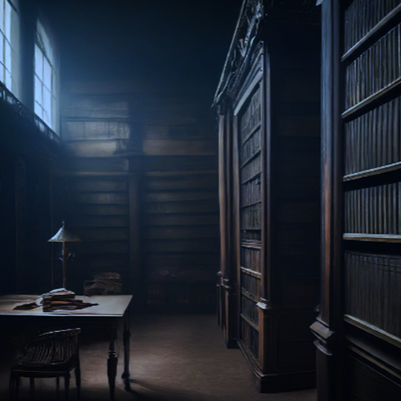

The Library of Mysteries

In the heart of the enchanted realm of Verdantia stood the sprawling Library of Mysteries, its ancient tomes filled with the secrets of the ages. Amidst the towering shelves of knowledge stood Reyna, a figure adorned in a flowing red cloak, her eyes scanning the pages in search of answers to the questions that haunted her past.
As the flickering torches cast dancing shadows across the labyrinthine corridors, Reyna delved deeper into the depths of the library, her curiosity driving her ever onward. She had always felt a kinship with the written word, finding solace and sanctuary within the pages of books that whispered of distant lands and forgotten legends.
But on this fateful night, as Reyna reached for a dusty volume nestled on a high shelf, she felt a presence lurking in the shadows, a chill creeping down her spine like icy tendrils of fear. Turning slowly, her senses keen and alert, Reyna caught sight of a figure emerging from the darkness, shrouded in a cloak of midnight hues. It was Vex, the crocodile whose very presence sent shivers down Reyna's spine, his form towering and imposing, radiating an aura of sinister power.
"Who goes there?" Reyna called out, her voice echoing through the silent halls of the library.
A low chuckle rumbled from the depths of the shadows, followed by the slithering sound of scales against stone. And then, emerging from the darkness like a specter of doom, came Vex, the crocodile whose very presence sent shivers down Reyna's spine.
"Greetings, my dear Reyna," Vex hissed, his voice dripping with honeyed deceit. "What brings you to this hallowed hall of knowledge on such a moonlit night?"
Reyna narrowed her eyes, her instincts on high alert as she sized up the cunning crocodile before her. She had heard whispers of Vex's treachery, his insatiable thirst for power driving him to manipulate and deceive all who crossed his path.
"I seek answers," Reyna replied, her voice steady despite the turmoil roiling within her. "Answers to questions that have plagued me for far too long."
Vex's lips curled into a sinister smile, revealing rows of razor-sharp teeth gleaming in the torchlight.
"Ah, but my dear Reyna, are you certain you wish to uncover the truths that lie hidden within these ancient tomes?" Vex purred, his eyes glittering with malice. "For once the veil of ignorance is lifted, there is no turning back."
Reyna hesitated, her heart fluttering like a trapped bird in her chest. She knew the risks of delving too deeply into the mysteries of the past, of unearthing secrets that were better left buried. But the burning desire for knowledge gnawed at her soul, driving her ever onward in her quest for understanding.
"I must know," Reyna whispered, her voice barely more than a breath of wind. "I must know who I am, and why I am here."
Vex's smile widened, a predatory gleam in his eyes as he circled closer, his movements sinuous and serpentine.
"Very well, my dear Reyna," Vex murmured, his voice a sibilant whisper in the stillness of the library. "I shall grant you the knowledge you seek, but at a price."
And with those words, Vex's sinister bargain was struck, sealing Reyna's fate inextricably to his own. Little did she know the depths of deception that lay ahead, or the sacrifices she would be forced to make in the name of destiny.
The Library of Mysteries